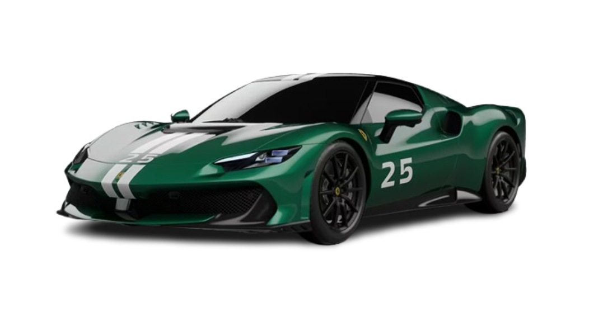
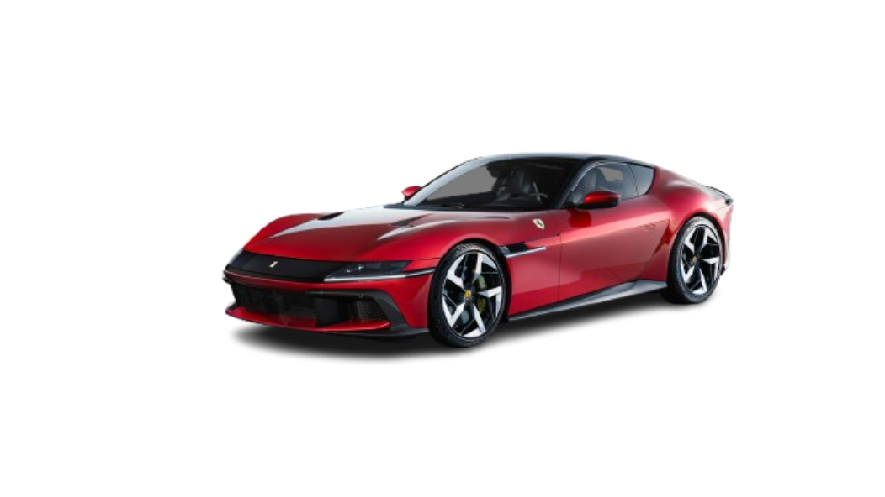
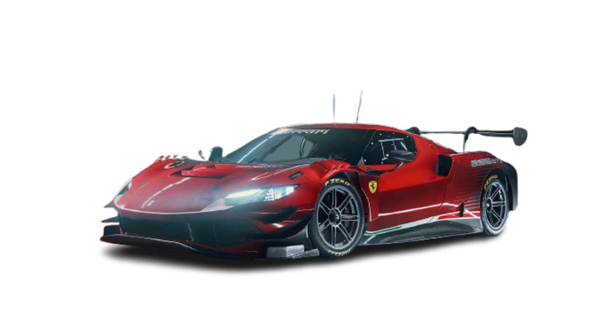

296 Speciale
Kilometraža: 25000 km
Godina proizvodnje: 2022.
Tip motora: F163 BC [ 1 ] 120° twin-turbo V6
Snaga motora: 488 KW / 663 KS
Vrsta goriva: Benzin
470.000 €
Istraži više
SF90 XX Stradale
Kilometraža: 71.028 km
Godina proizvodnje: 2020.
Tip motora: 4,0-litarski twin-turbo V8
Snaga motora: 574 kW / 797 KS
Vrsta goriva: Benzin
700.000 €
Istraži više
Ferrari 12Cilindri
Kilometraža: 29.370 km
Godina proizvodnje: 2024.
Tip motora:6.5 L atmosferski V12
Snaga motora: 610 kw / 830 KS
Vrsta goriva: Benzin
600.000 €
Istraži više
296 GT3
Kilometraža: 11.186 km
Godina proizvodnje: 2022.
Tip motora:3.0 L V6 twin-turbo
Snaga motora: 447 kw / 600 KS
Vrsta goriva: Benzin